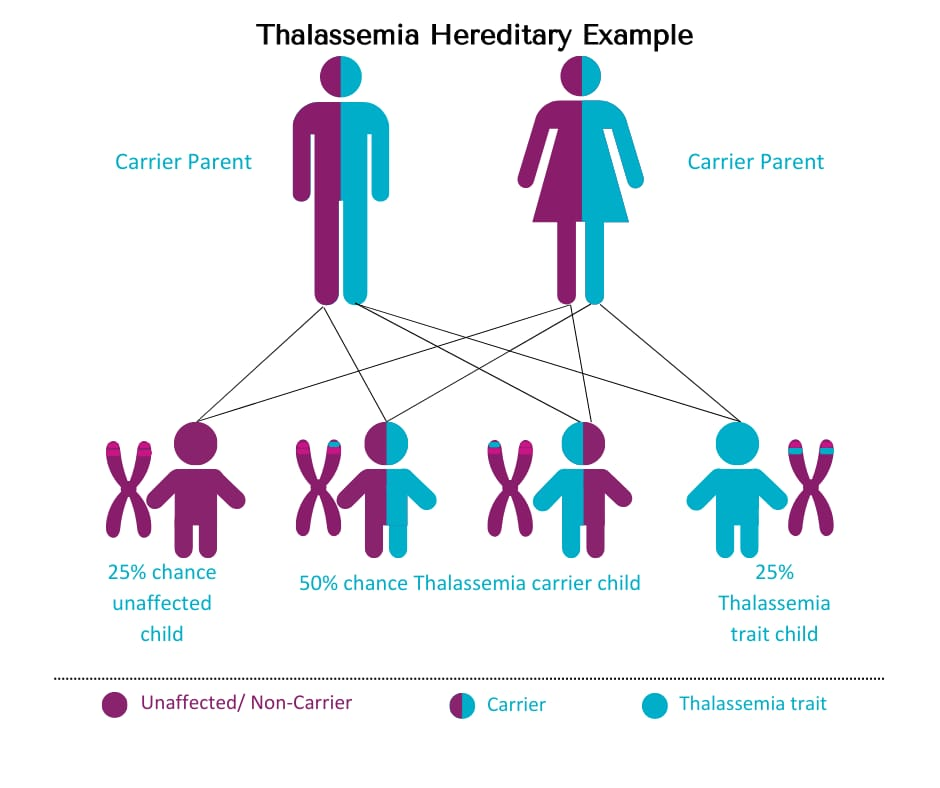
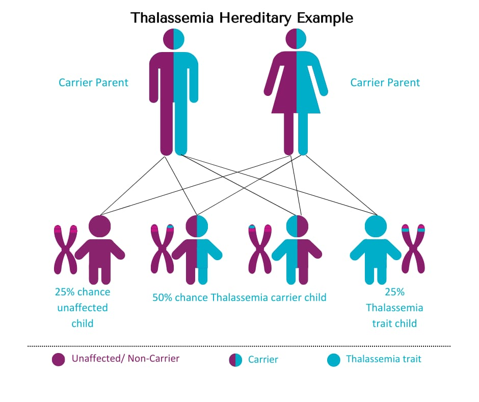
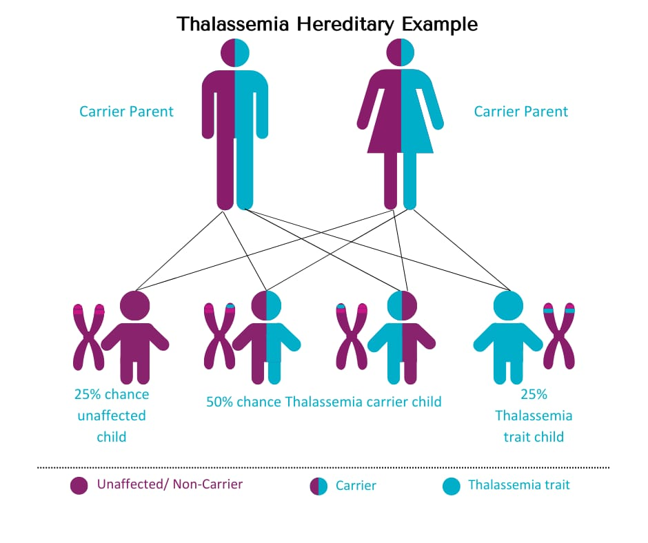

Gallery
 



Thalassemias are genetic disorders causing diminished synthesis of either alpha chains or beta chains of a protein in red blood cells called hemoglobin, a protein that carries oxygen within the blood. The individual cannot synthesize enough of either protein, thus suffering with lifetime anemia that has commenced during early childhood years. Thalassemia is hereditary wherein at least one parent of the child must be a carrier of the disease. It is supposed to either be caused by a genetic mutation or by the deletion of some select key gene fragments. Alpha thalassemia is a result of deletions in the alpha-globin genes. This decreases, or even eliminates, the number of alpha-globin chains. The degree varies between mild to severe in the amount of the alleles deleted. The most severe manifestations are from four deletions of the alleles, which would suggest no alpha globins are synthesized. These excess gamma chains then form tetramers. The mildest form is this deletion of one allele and, in most cases, clinically silent. Beta thalassemia is due to point mutations in the beta-globin gene and has been classified into three types on the basis of zygosity of the mutation. The heterozygous mutation leads to beta-thalassemia minor and homozygous mutation will cause beta-zero thalassemia due to the complete loss of the beta chains. This condition clinically leads to jaundice, growth retardation, hepatosplenomegaly, endocrine abnormalities, and very severe anemia, hence requires blood transfusion life-long.
One mutated gene:Mild signs and symptoms. The condition is called thalassemia minor.
Two mutated genes:Signs and symptoms will be moderate to severe. This condition is called thalassemia major, or Cooley anemia. Babies born with two mutated beta hemoglobin genes are usually healthy at birth but disease starts to manifest after 6 months of life when fetal hemoglobin (Hb-gamma) disappears and is replaced by adult Hb.
Coinheritance of alpha thalassemia:Beta-thalassemia patients with coinheritance of alpha thalassemia have a milder clinical course due to a less severe alpha-beta chain imbalance.
Coexistence of sickle cell trait:The presence of sickle cell trait with beta-thalassemia is a major hemoglobinopathy and results in manifestations of sickle cell disease. Unlike sickle cell trait in which major Hb is HbA, in the co-existence state the major Hb is HbS which constitutes more than 60% of Hb depending on the nature of the disease (beta-zero or beta-plus0.). Another very common Hb variant is found in the Southeast Asia population and this is Hemoglobin (HbE). This also correlates with a beta-thalassemia phenotype because most people who are thalassemia-positive in this territory present with HbE. The terms that we are increasingly using in practice are transfusion requiring and non-transfusion requiring thalassemias. All the basic classification is categorized into these two types depending upon whether transfusion of blood becomes a frequent requirement or not.
Alpha Thalassemia: Caused by mutations in the alpha globin gene, leading to reduced alpha globin production.
Beta Thalassemia: Caused by mutations in the beta globin gene, leading to reduced beta globin production.
Thalassemias are prevalent autosomal recessive disorders worldwide, affecting populations in the Mediterranean, Middle East, Transcaucasus, Central Asia, Indian subcontinent, and Far East. [Modell and Darlison 2008; Weatherall 2010a,b] They are also common in African heritage populations and are now prevalent in Northern Europe, North Central and South America, and Australia due to population migration. Around 56,000 conceptions worldwide have a major thalassemia disorder, with 30,000 affected by β-thalassemia major and 3500 perinatally from hydrops fetalis syndrome. Most of these patients are born in developing and low-income countries, creating a significant health burden. Additionally, 9 million carriers become pregnant annually, with 1.33 million pregnancies at risk for a thalassemia major condition. Modell and Darlison 2008; [Weatherall 2010b].
Detection of Carriers Hematological characteristics of β-thalassemia heterozygotes, either of the β0 or β+ kind, include elevated HbA2, microcytosis, hypochromia, and imbalanced globin chain production. A number of methods for screening for β-thalassemia carriers have been developed [Cao et al. 1998]. Finding the mean corpuscular volume (MCV) and mean corpuscular Hb concentration (MCH) is the most used method for the initial screening of people who may be carriersThe most crucial characteristic for diagnosing heterozygous β-thalassemia is the quantitative measurement of HbA2, which is used to further examine those who test positive for this screening test [Weatherall and Clegg 2001]. Nevertheless, those β-thalassemia heterozygotes who co-inherited α-thalassemia may be missed by the MCV–MCH determination and particularly the one-tube fragility test.
Depending on the type and severity, thalassemia can present in many different ways both in history and physical examination. History and detailed physical examination might give many clues that the patient is not aware of.
Skin: Skin lesions may have both anemia-related pallor and hyperbilirubinemia-related jaundice due to intravascular hemolysis. Fatigue is the most common presenting symptom due to anemia. On physical examination, extremities might have ulcerations. Bronze skin resulting from chronic iron deposition may occur due to multiple transfusions.
Musculoskeletal: Chipmunk face is the result of musculoskeletal extramedullary extension of hematopoiesis, which also causes malformed facial and other skeletal bones.
Heart: Chronic transfusion-induced iron accumulation in cardiac myocytes can throw off the heart's rhythm, leading to a variety of arrhythmias. Chronic anemia may potentially lead to overt heart failure.
The abdomen: Chronic hyperbilirubinemia can cause bilirubin gallstones to form and show up as the classic colicky pain associated with cholelithiasis. Both chronic iron deposition and extramedullary hematopoiesis in these organs can cause hepatosplenomegaly. Chronic hemolysis brought on by poorly controlled hematopoiesis leads to splenic infarcts or autophagy.
Hepatic: In thalassemias, hepatic involvement is frequently observed, especially because of the ongoing requirement for transfusions. Viral hepatitis associated with transfusions or chronic iron deposition can cause cirrhosis or chronic liver failure.
Slow Rates of Growth: A childs growth rate may be slowed by anemia, and puberty may be delayed by thalassemia. The child's age-appropriate growth and development should get special attention.
Endocrinopathies: Iron overload can cause deposits of iron in the bodys organ systems, which can impair the systems ability to operate. Diabetes mellitus may result from iron buildup in the pancreas, while hypothyroidism or hypoparathyroidism may result from iron buildup in the thyroid or parathyroid glands, respectively. Chronic arthropathies are caused by the deposits in the joints. Iron prefers to build up in the substantia nigra of the brain, where it can cause early-onset Parkinsons disease and other physical issues. Hemochromatosis is a broad category that includes several symptoms.
The literature has very little to say about the counseling policy of thalassemia services. A working party had considered the matter years ago and made some suggestions (WHO 1994). Therefore, I would prefer to focus on our experience from Sardinia. According to international regulations, counseling must be nondirective and based on a confidential interview. When an eligible nurse works with unmarried, for instance, a pediatrician with genetic training is accountable to counsel the identified at risk couples. The objective of the resource is to offer a reasoned platform for decision-making toward reproduction. Apart from the information on the natural history of the disease, the chapter deals with a number of the options which are available, including birth control, match selection, adoption, fetal testing, encompassing both prenatal and preimplantation diagnosis, and artificial insemination by healthy donors. We also very carefully discuss the problem when the genotypes suggest that a mild phenotype may appear, but we emphasize that this must be considered as a possibility rather than a promise.
According to universal standards, I firmly believe that treatment should be based on truth, full openness, and transparency. Other experts believed that this phenotype prediction should not be included before the very recent discovery of the HbF QTL. [Weatherall and Clegg 2001].
We advise HLA typing of fetal DNA where the sibling could be HLA identical and, therefore, a potential bone marrow donor in scenarios where the child was previously unaffected. In situations of an affected fetus, this information may be useful in deciding whether to continue the pregnancy. Most of the counseled couples in Sardinia, and other Mediterranean countries, like Cyprus, Continental Italy, and Greece, and more recently in Muslim countries, such as Iran, choose prenatal diagnosis. We educate the counselee on his or her choice with informed outcome and risk communication with the family members at last. An very effective way of enhancing the screening efficacy is through inductive screening as reported also in Pakistani populations.[Ahmed et al. 2002].
CBC is often the first investigation in a suspected case of thalassemia. A CBC showing low hemoglobin and low MCV is the first indication of thalassemia, after ruling out iron deficiency as the cause of anemia. The calculation of the Mentzer index (mean corpuscular volume divided by red cell count) is useful. A Mentzer index less than 13 suggests that the patient has thalassemia, and an index of more than 13 suggests that the patient has anemia due to iron deficiency.
Peripheral blood smear:A blood smear is referred to as a peripheral smear and manual differential in medical terms. The purpose of this is to study more properties of red cells. The following may be identified in thalassemia on the peripheral blood smear:
Iron deficiency anemia is ruled out as the cause by testing serum iron, ferritin, unsaturated iron-binding capacity (UIBC), total ironbinding capacity (TIBC), and percent saturation of transferrin.
Measure levels of erythrocyte porphyrin to distinguish indefinite beta-thalassemia minor from iron deficiency and lead poisoning. Levels are normal in beta-thalassemia and, compared with normal individuals, elevated in both cases.
Hemoglobin electrophoresis measures the type and balanced quantity of hemoglobin in red blood cells: Hemoglobinopathy (Hb) testing. In a normal adult, the type of hemoglobin found consists of 95% to 98% HbA, which is formed from alpha and beta-globin chains. Normal HbA2 comprises 2% to 3% of normal hemoglobin.
Beta thalassemia results in an imbalance of the production of the beta and alpha hemoglobin chains. HbA is either absent or is present in very low concentration, while HbF and HbA2 are usually higher in concentration in patients with beta-thalassemia major. In those with beta-thalassemia minor, HbA2 may be slightly increased and HbA is somewhat decreased. Some individuals with alpha thalassemia also have HbH, a less common type of hemoglobin. The most prevalent form of hemoglobin among sickle cell disease patients is HbS.
When parents are at high risk for hemoglobin abnormalities, hemoglobinopathy (Hb) assessment is utilized for prenatal screening. It is also used for state-mandated newborn hemoglobin screening.
DNA analysis:These tests aid in the verification of mutations in the beta and alpha globin-encoding genes. DNA testing, though not a regular follow-up measure, is sometimes employed to identify carriers and even aid in diagnosis of thalassemia.
Carrier status of other family members can sometimes be identified with family studies, which would be conducted to determine the kinds of mutations present in other relatives because having relatives who carry a thalassemia mutation increases the chances that another member of the same family will also carry that mutated gene. This testing can be useful in cases where a fetus is known to have a higher risk of thalassemia. In fact, this is crucial if both parents most likely have a mutation because this makes it possible for their child to inherit a mix of faulty genes that could make them suffer from a more severe type of thalasemmia. Multisystem evaluation: All related systems are usually involved in the disease progression; thus, all should be assessed regularly. According to the clinical suspicion and case description, some tests may be carried out or repeated like biliary tract and gall bladder imaging, abdominal ultrasonography, cardiac MRI, and serum hormone measures.Mild thalassemia (Hb: 6 to 10g/dl): The signs and symptoms with thalassemia minor are mild, with little or no treatment being necessary. In some situations, blood transfusion becomes necessary, especially postoperative, postpartum, or to control complications of thalassemia. Moderate to severe thalassemia (Hb less than 5 to 6g/dl)
Regular blood transfusions: Patients with major types of thalassemia often require regular, often every few weeks, blood transfusions. To achieve this goal, their hemoglobin level is usually maintained at about 9 to 10 mg/dl. The purpose here is to improve the condition of the patients, be able to observe erythropoiesis, and prevent extramedullary hematopoiesis. It is advisable to transfuse clean, packed red blood cells in amounts of 8 to 15 mL cells per kilogram of body weight over one to two hours in order to minimize the problems associated with transfusion.
Chelation therapy: Repeated transfusions cause iron to begin accumulating within the body's organs. To remove excess iron in the body, iron chelators (deferasirox, deferoxamine, and deferiprone) are administered simultaneously.
Stem cell transplant: It might be a bone marrow transplant, also known as a stem cell transplant, in only a few instances. Lifetime transfusions may no longer be necessary. The following are some of the challenges that can be compared against this surgery. The risks include graft failure, chronic immunosuppressive treatment, graft versus host disease, and transplant-related death. Gene therapy is the newest innovation in the treatment of severe thalassemia. It is achieved by obtaining the patient's autologous hematopoietic stem cells (HSCs) and then genetically modifying them with the help of vectors that express the normal genes. After conditioning is done, eliminating the existing HSCs, these are later infused back into the patients. Normal hemoglobin chains are produced by the genetically modified HSCs, and normal.
Distinctive Diagnosis: Iron studies and the Mentzer index rule out iron deficiency anemia.
Chronic illness-related anemia and renal failure: This is indicated by elevated inflammatory markers (CRP, ESR).
Peripheral blood smears and iron investigations are used to rule out sideroblastic anemias. Serum protoporphyrin levels are used to rule out lead poisoning.
The prognosis for thalassemia minor is excellent and usually asymptomatic. It does not affect morbidity or mortality. Doctors administer iron chelation therapy to people receiving recurring transfusions for the purpose of removing surplus iron in the body. Three medications are used in iron chelation therapy:
The following issues may arise from thalassemia major:
Patient education and deterrence
Patients should receive education on how to manage their illness by adhering to a suitable treatment plan and forming wholesome lifestyle choices.
Steer clear of too much iron. Patients should stay away from multivitamins and other iron-containing products unless their doctor advises them to do otherwise.
Eat a healthy diet. The patient might get better and have much energy if they eat a diet that is well balanced in nutrient-dense foods. Sometimes, to assist the production of new red blood cells, physicians suggest an folic acid supplement.
Steer clear of infections. Particularly after a splenectomy, patients should make every effort to prevent infections. To avoid infections, yearly flu shots, meningitis, pneumococcal, and hepatitis B vaccinations are advised.
The diseases are inherited, and thus, patients need to be counseled on the fact. If both parents have thalassemia minor, then the chance of having a child with thalassemia major is one in four. Parents need to be counseled also on the risk of passing the disease to their offspring if one parent has beta-thalassemia minor and the other parent has a sickle cell defect or another type of beta-globin gene abnormality. Patients with thalassemias should be educated that iron deficiency is not the cause of their condition and that iron supplements shall not cure their anemia; rather, if these patients are already receiving regular blood transfusions, these will only aggravate their build-up of iron.
Preimplantation and preconceptional diagnosis have been made possible by advancements in assisted reproduction methods and molecular genetics, which can now examine a single cell's genotype (Handyside et al. 1990; Monk and Holding 1990). These days, these methods are widely accessible, even in β-thalassemia-prone nations like China (Jiao et al. 2003; Xu et al. 2009), Cyprus (Kuliev et al. 2011), and Continental Greece (Zachaki et al. 2011). One or two blastomeres in eight-cell embryos following in vitro fertilization (by intracytoplasmic sperm injection) or a biopsy of trophectoderm cells from the blastocyst are used for preimplantation genetic diagnosis (Kuliev et al. 1998; Kokkali et al. 2007).
The analysis is a basis for preconceptional diagnosis. To help prevent misdiagnosis through recombination during the first meiosis, preconceptional diagnosis bases its analyze on the first polar body of unfertilized eggs and then the second polar bodies after fertilization (Verlinsky et al. 1990). The diagnosis was performed by employing multiple nested PCR analysis for the identification of mutations and polymorphic alleles at the β-globin cluster (Kuliev et al. 2011; Zachaki et al. 2011). It has been recently proposed that HLA typing of the embryo can be used to select a nonaffected fetus whose HLA is compatible with that of a prior affected sibling(Kuliev et al. 2011).
Programs to prevent β-thalassemia in Mediterranean populations have mainly led to couples at risk being informed about their reproductive choices. The birth incidence of thalassemia major in these groups has gradually been reduced due to general acceptance of fetal testing and increased awareness of the hereditary risk and preventative measures. For example, based on carrier rate and assuming random mating, the annual births of thalassemia major infants in Sardinia was projected to be reduced from 1:250 live births to 1:1660 in the year 2009 with 85% of the cases being prevented.
Principal causes for the births of affected children are negative attitudes towards fetal testing after counseling and the decision to continue with the pregnancy for ethical or religious reasons, even though there is already a recorded presence of an affected fetus. Less common causes are misinformation, ignorance, paternity, and errors of fetal testing. It appears that there were no adverse effects of the programs although no study has been done on this issue.
